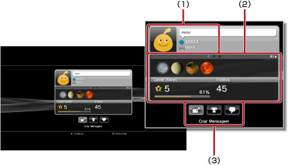
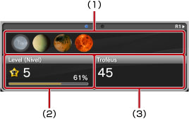

Amigos > Lista de Amigos > Visualizar perfis
Visualizar perfis
Para utilizar esta função, poderá ter de actualizar o software de sistema.
Pode visualizar o seu perfil ou o perfil de um Amigo. Para visualizar o perfil de um Amigo, seleccione o avatar do Amigo.

(1) |
Apresentação do estado |
|---|---|
(2) |
Informação |
(3) |
Painel de controlo das opções |
Nota
Para obter informações sobre a apresentação de estados, consulte  (Amigos) > [Lista de Amigos] > [Verificar o Estado] neste manual.
(Amigos) > [Lista de Amigos] > [Verificar o Estado] neste manual.
Visualizar informações num ecrã de perfil
Num perfil, pode visualizar diversas informações, tais como o progresso de troféus, o número de troféus ganhos em cada grau e informações detalhadas sobre os seus Amigos. Pode ir alternando entre cada informação premindo o botão L1 ou R1.

(1) |
Troféus recentemente ganhos |
|---|---|
(2) |
Nível actual e progresso para o nível seguinte |
(3) |
Número total de troféus ganhos |
Com o painel de controlo em [Perfil]
Quando visualizar um perfil, pode executar várias operações com o painel de controlo. Os ícones apresentados no painel de controlo dependem do estado do Amigo.
 |
Menu (título do jogo) | Visualizar uma lista de acções que podem ser executadas no jogo que está a ser jogado. |
|---|---|---|
 |
Adicionar um Amigo | Enviar um pedido para adicionar alguém à sua lista de Amigos. |
 |
Lista de Mensagens | Ver uma lista das mensagens trocadas com o Amigo. |
 |
Criar Mensagem | Criar uma mensagem nova. |
 |
Comparar Troféus | Comparar progresso de troféus com o estado de um Amigo. |
 |
Iniciar Nova Conversação | Iniciar uma conversação. |
 |
Responder a Pedido para Adicionar um Amigo | Abrir a mensagem que pede para adicionar como Amigo e enviar uma resposta. |
 |
Adicionar à Lista de Contactos a Bloquear | Adicionar um Amigo à sua lista de contactos a bloquear. |
 |
Eliminar da Lista de Contactos bloqueados | Eliminar um Amigo da sua lista de contactos a bloquear. |
Notas
- O painel de controlo não pode ser oculto.
- O painel de controlo não pode ser mostrado quando estiver a visualizar o seu próprio perfil.
Alterar a cor de fundo/cor do ecrã do seu perfil
Seleccione o separador superior esquerdo do ecrã do perfil e prima o botão  para apresentar a cor/paleta de cores. Seleccione a cor de fundo/cor do ecrã do seu perfil na paleta.
para apresentar a cor/paleta de cores. Seleccione a cor de fundo/cor do ecrã do seu perfil na paleta.

Nota
Não é possível alterar a cor de fundo/cor do ecrã dos ecrãs dos perfis de outras pessoas.
Comparar o estado de troféus ganhos
1. |
Em |
|---|---|
2. |
Seleccione
|
3. |
Seleccione um jogo.
|